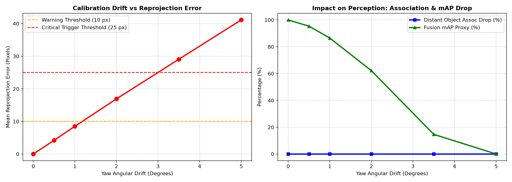
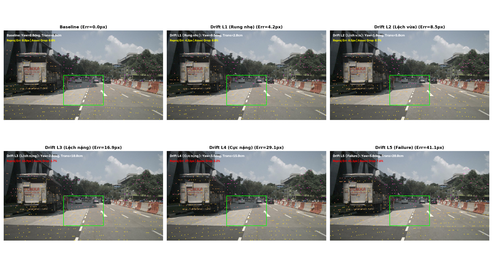

Đo đạc định lượng sai số chiếu lại (Reprojection Error) và độ rớt mAP trên dữ liệu thực tế nuScenes, thiết kế máy trạng thái an toàn ngắt Sensor Fusion khi lệch góc > 2.0°.
[u*z, v*z, z]^T = K * P_cam
Error = sqrt((u_pert - u_base)^2 + (v_pert - v_base)^2)
| Cấp độ Thử nghiệm | Góc Lệch (Δyaw) | Sai số Chiếu (Mean px) | Điểm Giữ lại (%) | mAP Proxy (%) |
|---|---|---|---|---|
| Baseline (Chuẩn) | 0.0° / 0 cm | 0.00 px | 100.0% | 100.0% |
| L1: Rung nhẹ | 0.5° / 2 cm | 4.19 px | 100.0% | 95.34% |
| L2: Ổ gà / Vừa | 1.0° / 5 cm | 8.50 px | 99.29% | 86.50% |
| L3: Va quẹt nhẹ | 2.0° / 10 cm | 16.91 px (Max 36) | 98.35% | 62.15% |
| L4: Rất nặng | 3.5° / 15 cm | 29.07 px | 94.80% | 14.67% |
| L5: Thất bại hoàn toàn | 5.0° / 20 cm | 41.13 px (Max 83) | 92.43% | 0.00% |
run_calibration_drift.py lưu tại results/calibration_drift_metrics.csv.


CALIB_DEGRADED; lập lịch chạy thuật toán Galibr Targetless Calibration tự cân chỉnh lại khi xe dừng đèn đỏ!Kéo thanh trượt góc lệch để quan sát 2.868 điểm laser trôi dạt khỏi nắp cốp xe tải, theo dõi chỉ số Reprojection Error nhảy số và quan sát bộ điều khiển ADAS ECU tự động kích hoạt chế độ Fail-safe!